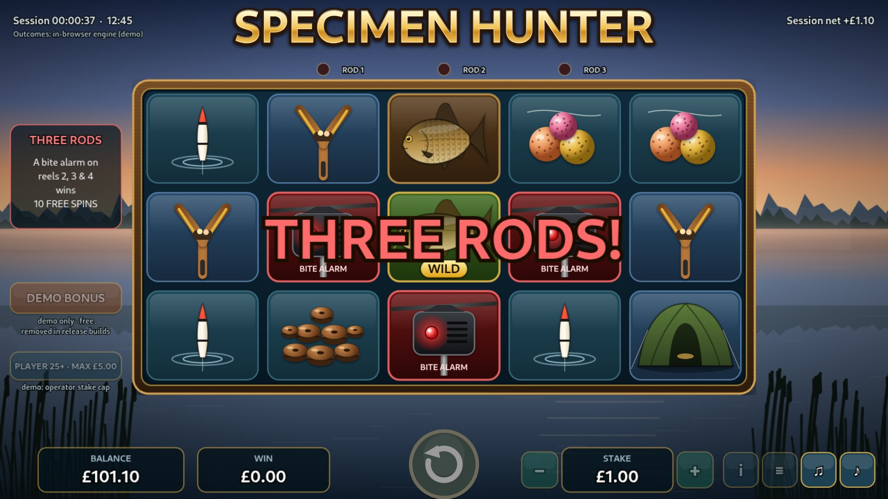
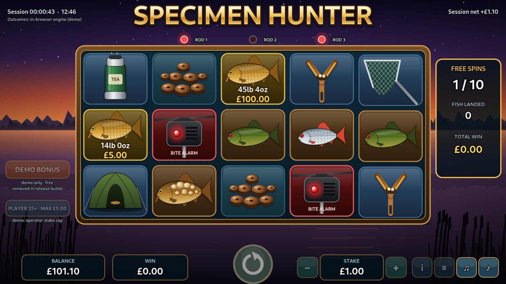
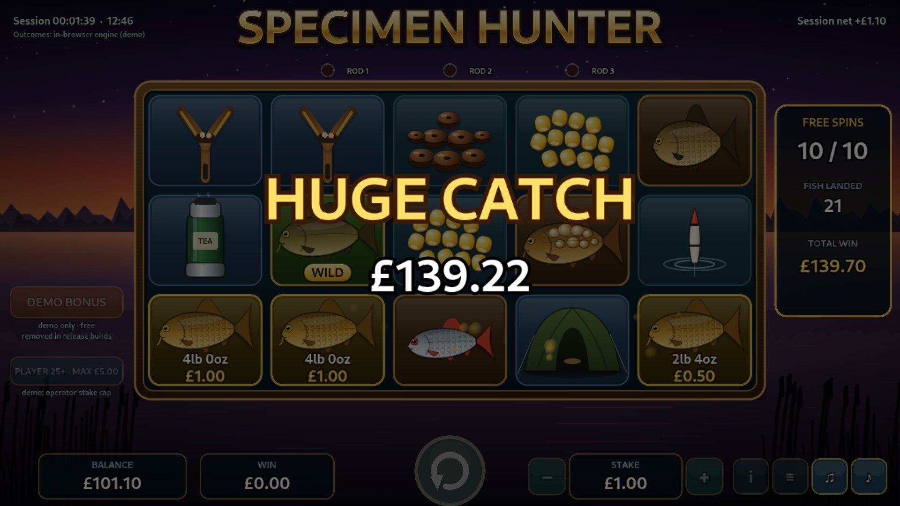
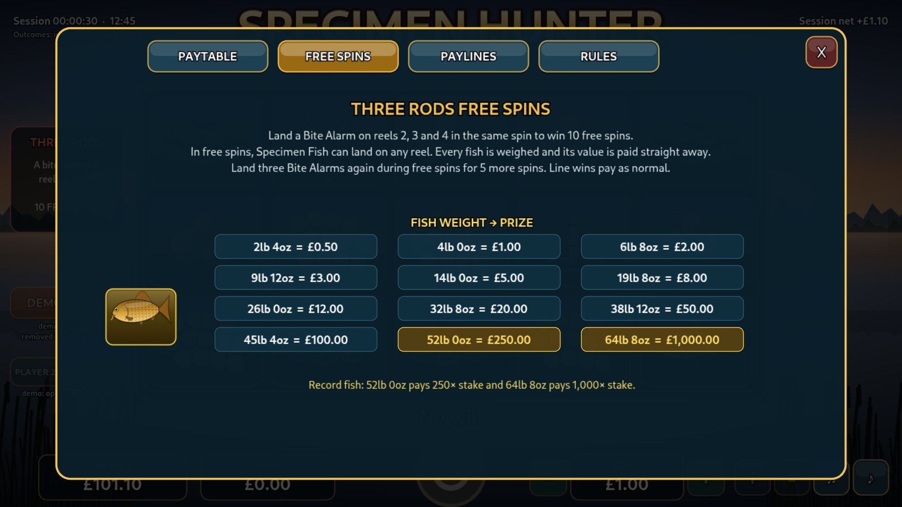

The idea
Carp anglers fish with three rods, each with an electronic bite alarm. When all three go at once, it's chaos and joy. In Specimen Hunter that moment is the bonus trigger: a bite alarm on each of reels 2, 3 and 4 starts the Three Rods free spins.
In free spins, Specimen Fish land with real weights, from 2lb 4oz up to a record 64lb 8oz, and each one pays the moment it lands.

See it play
Recorded from the real game: a line win, the paytable, then a full Three Rods feature paying 139.7× stake (£139.70 at £1). Silent recording; the game itself has music and sound.
The numbers
From the PAR sheet: exact strip maths plus a 50-million-round simulation of the production engine (simulated RTP 96.06% ± 0.20%). Design figures, not independently certified.
The moments

Weighed and paid
Every fish shows its weight and pays immediately. No collector symbol needed.

Big Catch tiers
Big, Huge and Monster Catch at 15×, 50× and 200×, before the feature summary.

Record fish
52lb 0oz pays 250× and 64lb 8oz pays 1,000× stake.
Built for GB rules
| Requirement | In the game |
|---|---|
| £5 stake cap; £2 for 18–24s | Applied from the operator's player settings |
| 2.5 s minimum spin | Fixed reel timings |
| No turbo or slam stop | Reels can't be sped up or stopped |
| No celebrating returns ≤ stake | Shown plainly: no sound or animation |
| No autoplay or bonus buy | Neither exists |
| Player information | Session time, net position, history, reality checks |
How it's built
One engine, two places. The same tested engine file decides outcomes in the browser demo and on a dependency-free game server, which handles sessions, stake caps, a whole-pence wallet and safe retries.
Everything original. Symbols, scenery, music and sound are generated in code with PixiJS and Web Audio: no licensed assets.
Checked. 15 automated tests, and a formula-driven PAR sheet that matches the engine exactly.